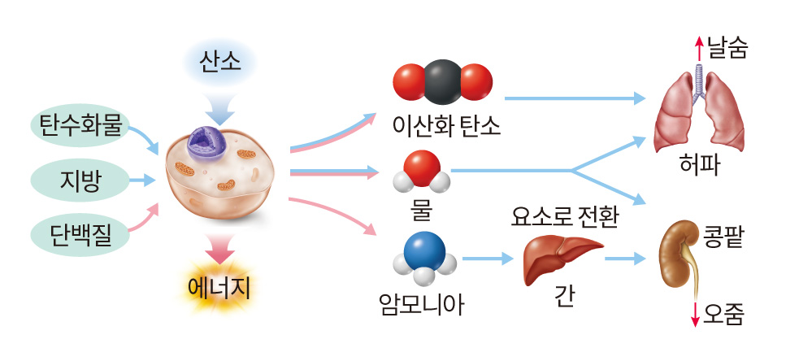
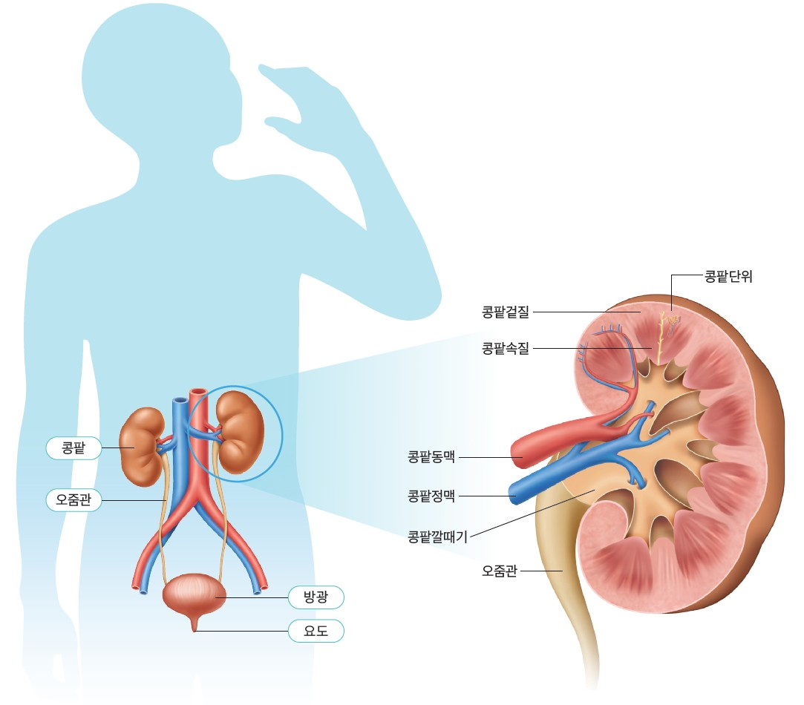
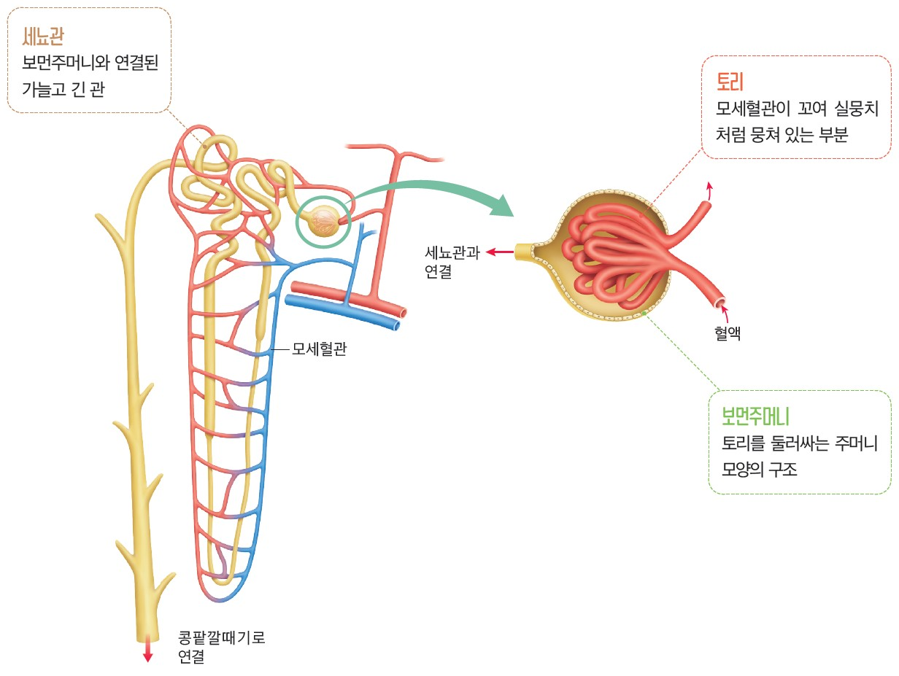
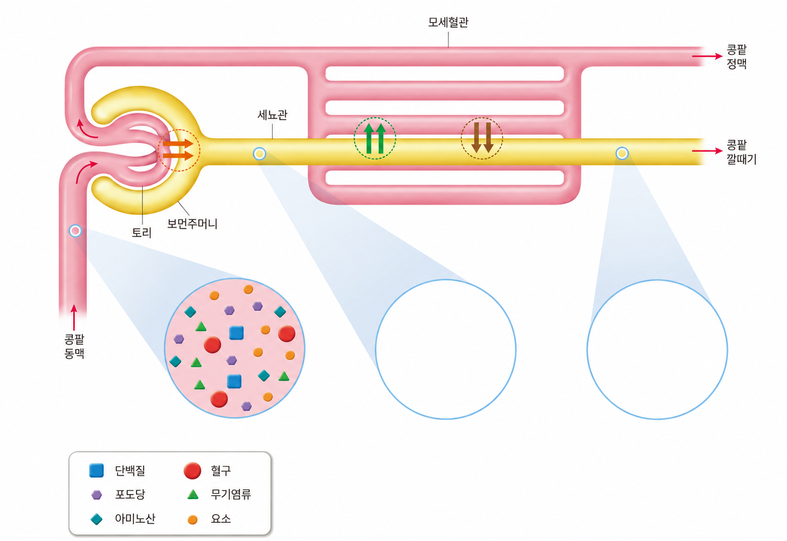
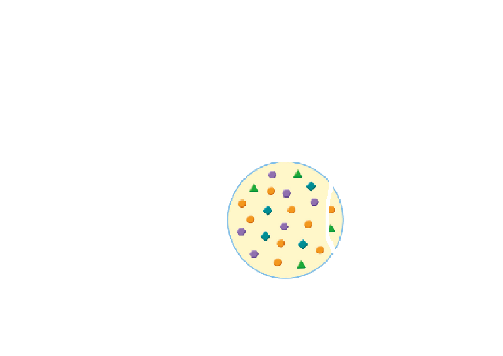
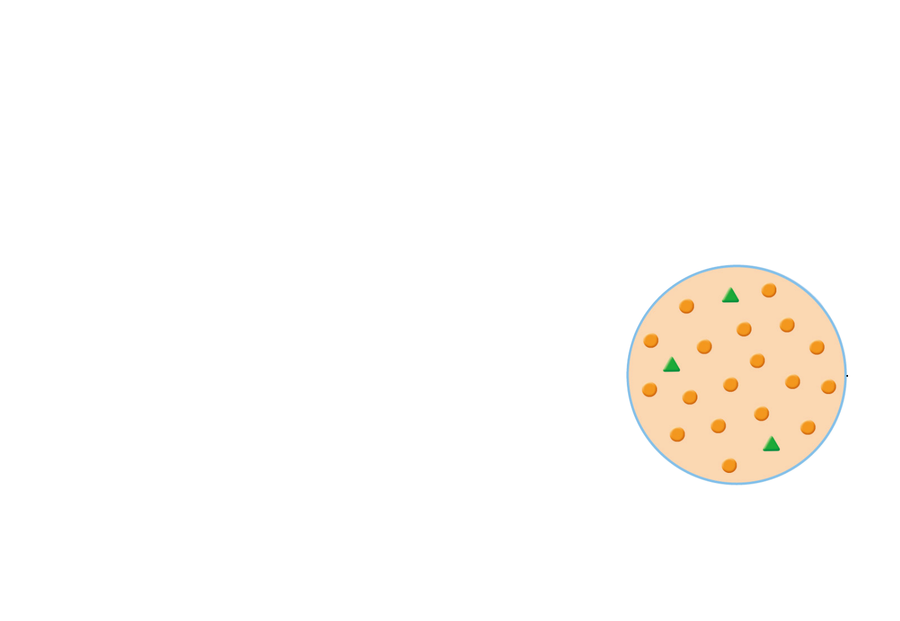

세포에서 산소를 이용하여 영양소를 분해하여 에너지를 내고 나면 이산화탄소와 물이 생김.
필요한 명칭 뱃지를 끌어다 빈칸을 채워보세요! (무한 생성)

그림을 참고하여 각 부분에 대한 설명을 바르게 연결해 보세요!

버튼을 눌러 각 영역의 성분 차이를 관찰해 보세요! (여러 개 동시 관찰 가능)



토리에서 보먼주머니로 크기가 작은 포도당, 아미노산, 무기염류, 물, 요소 등이 이동하는 현상입니다. (단백질과 혈구는 크기가 커서 이동하지 못합니다.)
세뇨관을 지나는 동안 포도당, 아미노산 등 몸에 필요한 물질이 세뇨관을 둘러싼 모세혈관으로 다시 돌아가는 현상입니다.
혈액에 미처 걸러지지 않고 남아 있던 노폐물이 모세혈관에서 세뇨관으로 이동하는 현상입니다.
만들어진 오줌이 콩팥에서부터 어떻게 나가는지 순서를 맞춰보세요.
무한 생성 뱃지를 드래그하여 표를 완성하세요!